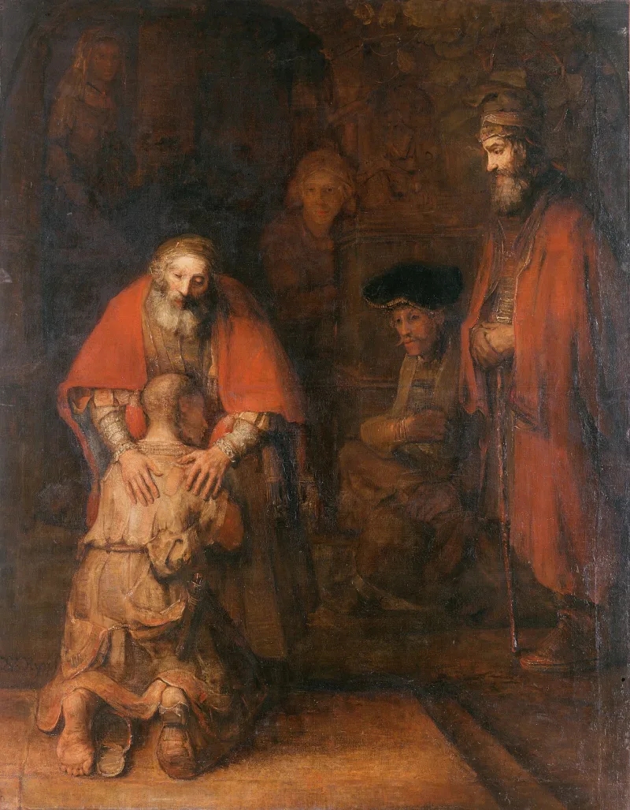

LDS scholars have a real answer here. Say so before your friend does.
2 Nephi 25:23 — "it is by grace that we are saved, after all we can do." Moroni 10:32 adds: deny yourselves of all ungodliness, then is his grace sufficient.
It reads like a condition. Your own maximum effort first, then God covers the gap.
Ephesians 2:8-9 says the opposite — saved by grace through faith, "not of works, lest any man should boast."
Stephen Robinson of BYU says "after all we can do" is an old turn of phrase. He reads it as in spite of all we can do.
And in 2015 Dieter Uchtdorf, of the First Presidency, preached grace in words most evangelicals would recognise.
Arguable both ways. The old-phrase reading is fair.
The modern preaching is real. But ask what the system asks of a member in practice.
Temple worthiness. Interviews.
Ordinances. Then see if that matches the sermon.
"When you stand before God, what are you resting on?"

Robinson and Uchtdorf read the verse as grace in spite of all we can do.
Four replies. Stephen Robinson of BYU and Royal Skousen read 'after all we can do' as an old turn of phrase. It means in spite of all we can do. Grace saves despite our failure, not after our success.
In 2015 Dieter Uchtdorf of the First Presidency preached that 'after' does not mean 'because'. Salvation is not earned by hitting a quota.
Third, in context Nephi's point is that the law of Moses is dead and only grace saves. Fourth, John Welch reads the verse against the covenant framing of Mosiah 4.
A draw: their newer reading is fair, but Moroni 10:32 still sets a test first.
The 'in spite of' reading is possible in English, and after Uchtdorf it is close to official. That genuinely narrows the gap. Christians who ignore it are arguing with a position the church no longer holds.
Two things keep the criticism alive. The new reading is late. From Joseph Fielding Smith through Kimball and McConkie, the standard reading was conditional. And Moroni 10:32 sets a condition in its grammar that no idiom removes. Deny yourselves of all ungodliness, then is his grace sufficient.
Neither side lands a knockout.